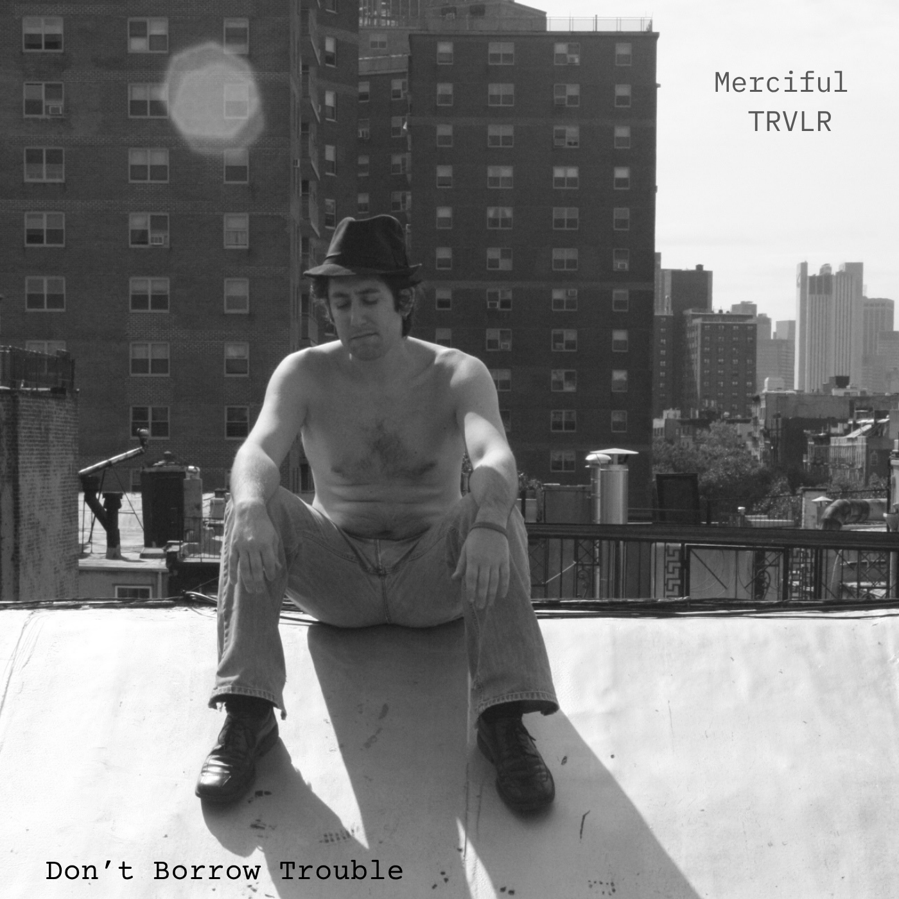

Merciful
TRVLR
A musical project by Elliot Sneider blending jazz, improvisation, songwriting, and storytelling.
Photo: Merciful TRVLR live at PAUSA Art House, Buffalo.
Don’t Borrow Trouble
Don’t Borrow Trouble is a concert experience created for spaces where reflection, compassion, and human connection matter deeply. Combining original music, storytelling, and readings from his companion book, pianist and author Elliot Sneider explores themes of grief, resilience, caregiving, uncertainty, hope, and the challenge of remaining present during difficult moments.
The performance was shaped in part by Sneider’s experience losing his wife to cancer and rebuilding life afterward as a father, artist, and human being. Rather than focusing only on loss, the evening creates space for humor, honesty, memory, healing, and shared humanity. Audiences frequently describe the performances as intimate, calming, emotionally resonant, and deeply connective.
The program is especially well suited for arts series, synagogues, community organizations, cancer support centers, hospitals, wellness initiatives, literary programs, and spaces interested in thoughtful programming around healing and the human experience.
Featuring live music from the album, readings from the book, and spontaneous interaction between musicians and audience, each performance moves fluidly between concert, conversation, and communal experience. The music was recorded in Nashville in 2023 and released under Sneider’s project, Merciful TRVLR.
Book & Album
Don’t Borrow Trouble — Book
A written companion to the performance, exploring grief, memory, resilience, and the human tendency to worry about tomorrow instead of living in today.
Buy the Book
Don’t Borrow Trouble — Album
The companion album, recorded in Nashville in 2023 and released under Elliot Sneider’s musical project, Merciful TRVLR.
Buy the AlbumLive Video
Merciful TRVLR
Merciful TRVLR is a musical project by Elliot Sneider blending jazz, improvisation, songwriting, and storytelling into a deeply human and collaborative experience. Rooted in the belief that no performance is ever truly solo, the project invites audiences into an atmosphere of listening, vulnerability, reflection, and connection.
Performances are designed not simply as entertainment, but as shared experiences that allow space for emotion, memory, healing, and community. Drawing from jazz, American song, literary storytelling, and spontaneous improvisation, Merciful TRVLR creates performances that are intimate, exploratory, and quietly hopeful.
Merciful TRVLR Collective
- Elliot Sneider — piano, vocals, storytelling
Featuring a rotating collective of musicians including:
- Colin Brydalski — bass
- Abdul-Rahman Qadir — drums
- additional collaborators on bass, drums, strings, horns, voice, and improvisation
Merciful TRVLR is designed as an evolving musical community, allowing each performance to adapt organically to the musicians, venue, and audience present in the room.
About Elliot Sneider
Elliot Sneider is a pianist, composer, writer, and improviser whose work blends jazz tradition with personal storytelling. Following the loss of his wife to cancer, Sneider began creating performances that explored grief, resilience, caregiving, uncertainty, and the search for meaning through music, writing, and human connection.
He has performed with a wide range of Buffalo artists including Vanessa Vacanti, My Cousin Tone, and his own project, Merciful TRVLR. Sneider performs regularly both nationally and internationally with Michael Arenella’s Dreamland Orchestra, and has toured his solo show My Brother George, exploring the music of George Gershwin.
His performances emphasize deep listening, spontaneity, warmth, and the belief that music can help create spaces where people feel seen, connected, and less alone.